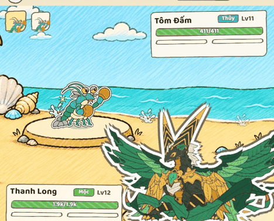
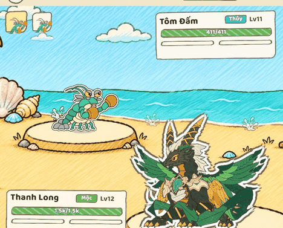
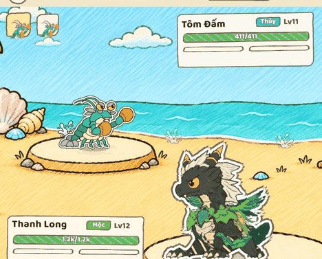

Chiêu cuối Vạn Diệp của Rồng Trúc (boss cuối đảo Mộc), bản 3 lốc khí
Gồng cánh: 3 tia sét đánh trước rồng → kén bung → 3 lốc khí (gói Tornado Collection, tách nền) mọc sau rồng, lá cuốn quanh → quạt cánh: 3 lốc toả hình quạt rồi hội tụ vào đối thủ, mỗi lốc chạm là lá nổ tung + sét → lốc chính trùm, 2 lốc chạy vòng quanh → sập cánh: rừng gai lá, sét giáng + mưa 5 tia sét → lốc tan. Ảnh chụp trong trận (~7,5 khung/giây, không phải tốc độ thật của game).


